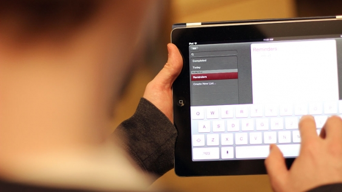

Technology in Our Life
Change is never easy. As we age, some of the decisions we have to make are deeply personal and force us to have to make concessions where we don’t necessarily want to. For many, choosing to incorporate a mobility chair into everyday life can be difficult, because it feels like independence is slowly slipping away.

Sometimes, an injury will require a wheelchair. In other instances, it may be that balance, stability, and stamina just aren’t what they used to be and you need assistance to get around. Either way, wheelchairs shouldn’t be considered as a negative, they should be looked at as an opportunity to continue your life and allow you to stay independent for longer.
Advantages
As we get older, we just naturally get more unsteady on our feet. We are slower than we once were, our muscles and joints are weaker and unfortunately, that makes us more prone to falls. Much needed medication can also play a role in our balance and stability.
The main advantage of a wheelchair is it keeps you mobile. If an injury or chronic health condition keeps you from being as active as you once where, a wheelchair is a good way to regain much of your mobility.
There are two types of wheelchairs – manual and power. Manual wheelchairs are either self-propelled or companion propelled – meaning that either you will have to use your own body strength to move the chair or a loved one will have to push you. Power or electric wheelchairs run on a motor and two batteries and are controlled, most often, through the use of a joystick of some sort.
Add Comments